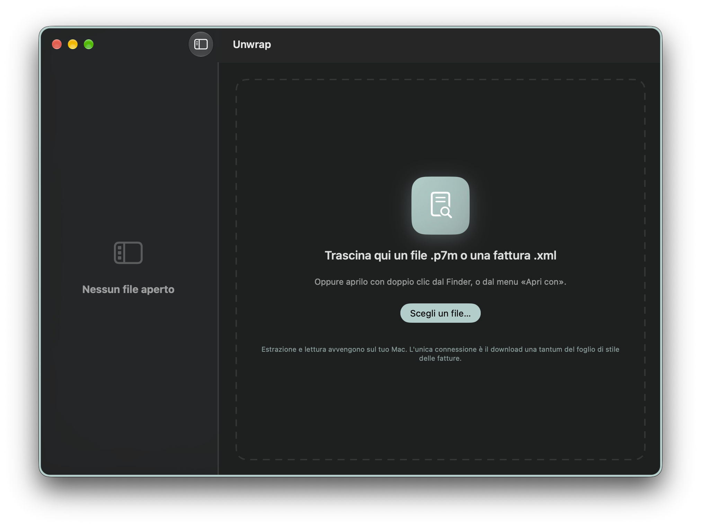

Unwrap — P7M e XML Viewer
App per macOS che apre i file .p7m (buste firmate CAdES/PKCS#7).
Con un doppio clic mostra subito il contenuto: PDF, fattura elettronica
impaginata, XML con sintassi colorata, testo o immagine — senza il
solito giro verifica → estrazione → apertura con altri strumenti.
Tutto elaborato in locale sul Mac, nessun file lascia il dispositivo.
Si integra anche con il Finder: basta selezionare un .p7m e
premere la barra spaziatrice per vederne l'anteprima con Quick Look,
senza nemmeno aprire l'app.

Scrivimi direttamente, rispondo io: francesco.tarini@gmail.com
Domande frequenti
- Cos'è un file .p7m? È un documento (PDF, fattura elettronica, XML, immagine...) racchiuso in una "busta" firmata digitalmente secondo lo standard CAdES/PKCS#7, usato in Italia per fatture elettroniche, PEC e comunicazioni con la Pubblica Amministrazione. Unwrap apre la busta e mostra subito il contenuto.
- Requisiti: macOS 27 "Golden Gate" o successivo, Mac con Apple Silicon.
- I miei file lasciano il Mac? No: l'estrazione e la lettura avvengono interamente in locale. La rete è usata solo per il foglio di stile delle fatture elettroniche, la verifica facoltativa della firma (OCSP/CRL) e il link "Dona".
- Cos'è il banner donazioni? Un invito occasionale, disattivabile nelle Impostazioni, a sostenere volontariamente lo sviluppo tramite un link PayPal esterno. Non sblocca nessuna funzionalità.
Unwrap — P7M and XML Viewer
A macOS app that opens .p7m files (signed CAdES/PKCS#7 envelopes).
One double-click shows the content right away: PDF, a nicely formatted
e-invoice, syntax-highlighted XML, text or an image — instead of the
usual verify → extract → open routine with other tools. Everything is
processed locally on your Mac, no file ever leaves the device. It also
integrates with the Finder: select a .p7m and press the
spacebar for a Quick Look preview, without even opening the app.
Write to me directly, I answer personally: francesco.tarini@gmail.com
FAQ
- What is a .p7m file? It's a document (PDF, e-invoice, XML, image...) wrapped in a digitally signed "envelope" following the CAdES/PKCS#7 standard, widely used in Italy for electronic invoices, certified email (PEC) and communications with public administration. Unwrap opens the envelope and shows the content right away.
- Requirements: macOS 27 "Golden Gate" or later, Apple Silicon Mac.
- Does my data leave the Mac? No: extraction and reading happen entirely on-device. Network access is only used for the invoice stylesheet, the optional signature check (OCSP/CRL), and the "Donate" link.
- What is the donation banner? An occasional, dismissible prompt (can be turned off in Settings) to voluntarily support development via an external PayPal link. It never unlocks any feature.